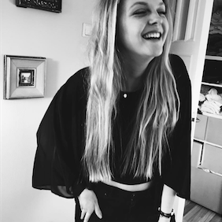

Ik ben Laura Geerars (11007699), eerstejaars student Informatiekunde aan de Universiteit van Amsterdam. Deze portfolio is voor het vak Multimedia- en Interactieontwerp (MMIO). Alle opdrachten die ik heb gemaakt voor dit vak zijn op deze site te vinden.
Onder de kopjes Individuele opdrachten & Groepsopdrachten zijn de verplichte opdrachten en het groepswerk te vinden. Bij het kopje Eindopdracht staat de eindopdracht waar mijn teamgenoten Vincent Damen, Tom Dekker, Marit Beerepoot & Jessy Bosman en ik 4 weken mee bezig zijn geweest.
Onder het kopje Dump staan de overige schetsen, wireframes en andere dingen die zijn gemaakt gedurende het vak MMIO.